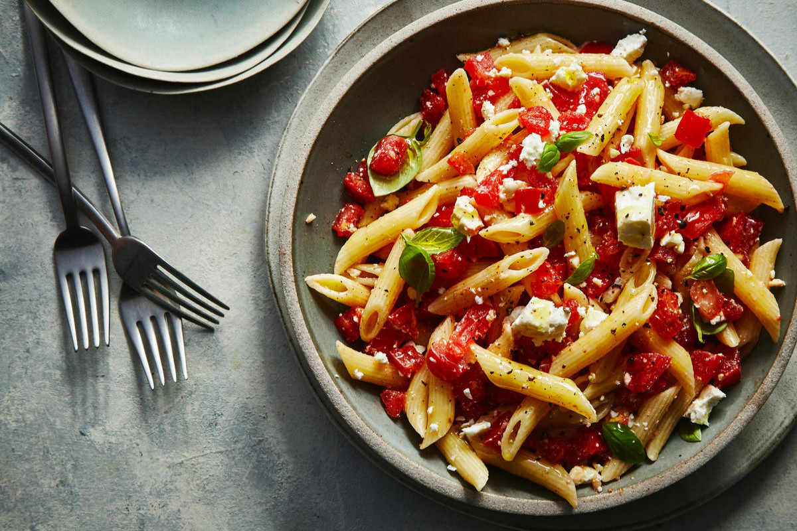

Pasta

Легендарная паста карбонара. Не слушайте никого, в настоящей карбонаре не бывает сливок.
При правильном приготовлении вы обязательно почувствуете мягкий сливочный вкус - то, за что любят это блюдо. В чем секрет?
Попробуйте приготовить спагетти карбонара, это просто с нашим рецептом.
Ингридиенты:
- Спагетти - 400 г
- Грудинка варено-копчёная - 200 г
- Яйцо куриное - 1 шт.
- Желтки - 3 шт.
- Сыр пармезан - 75 г
- Масло сливочное - 2 ст.ложки
- Масло оливковое - 1 ст.ложка
- Чеснок - 2 зубчика
- Соль - по вкусу
- Перец черный - по вкусу
- Разогреть сковороду, растопить 1 ст. ложку сливочного масла и отправить туда грудинку. Добавить 2 зубчика чеснока, предварительно раздавленных ножом. Грудинку обжаривать на маленьком огне 10 минут, из неё должен вытопиться жир, но она должна остаться мягкой. После обжаривания чеснок убрать.
- В кипящую воду добавляем 1 ст. ложку соли, 1 ст. ложку оливкового масла и спагетти. Варим так, как указано на упаковке спагетти, - важно соблюдать указанное время варки, чтобы сварить спагетти правильно.
- У трёх яиц отделить белки от желтков. Отправить в миску 3 желтка и одно яйцо с белком, посолить и поперчить (по 1 щепотке), хорошо взбить и добавить 2 ст. ложки натертого сыра. Перемешать.
- Готовые спагетти откинуть на дуршлаг, предварительно оставив 1,5 стакана воды, в которой они варились.
- Выключить огонь под сковородой с грудинкой, отправить туда спагетти, добавить 1 ст. ложку сливочного масла и вылить взбитые яйца с сыром.